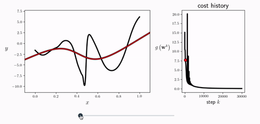
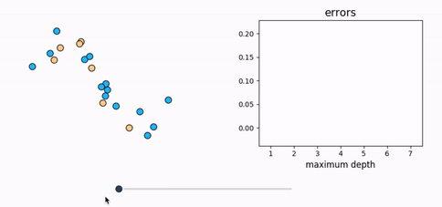

Gradient Descent
Chapter 3

Visual Learning Lab
Intuition, visualization, derivation, and Python implementation for every major concept.


from sklearn.linear_model import LogisticRegression
from sklearn.model_selection import train_test_split
from sklearn.metrics import accuracy_score
X_train, X_test, y_train, y_test = train_test_split(X, y)
model = LogisticRegression(max_iter=1000)
model.fit(X_train, y_train)
accuracy_score(y_test, model.predict(X_test))Accuracy: 0.921




Used as a reference text at
100+ universities and colleges


Praises the steady build-up of tools, examples, runnable code, and detail.
David Duvenaud Associate Professor, University of Toronto
Highlights the book's path from basic principles to practical implementation.
John G. Proakis Professor Emeritus, Northeastern University
Emphasizes the unified optimization viewpoint and visual explanations.
Kimiaki Shirahama Professor, Doshisha UniversityPoints to the first-principles presentation, geometric intuition, and Python exercises.
Osvaldo Simeone Professor, King's College London